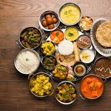
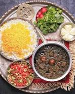
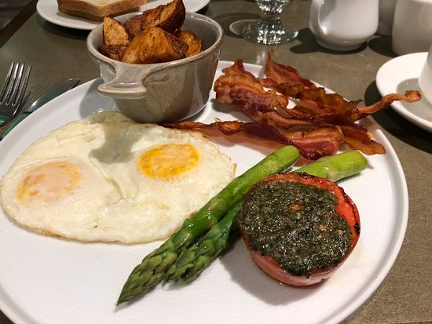

Most Popular Cuisines
Must Try




Know More
Wanted to know the most famous food in Canada?
You'll find poutine on most Canadian menus, but its real home is in Quebec. The savory dish combines fries, cheese, and gravy.
What is the most eaten meat in Canada?
Chicken is Canada’s #1 meat protein. The average Canadian eats more than 31kg of chicken each year.
What is Canada's typical food?
Foods such as bannock, moose, deer, bison, pemmican, maple taffy, and Métis stews, such as barley stew, are all either traditional Indigenous foods, or originate from Canada with roots in Indigenous cuisines, and are eaten throughout the country.